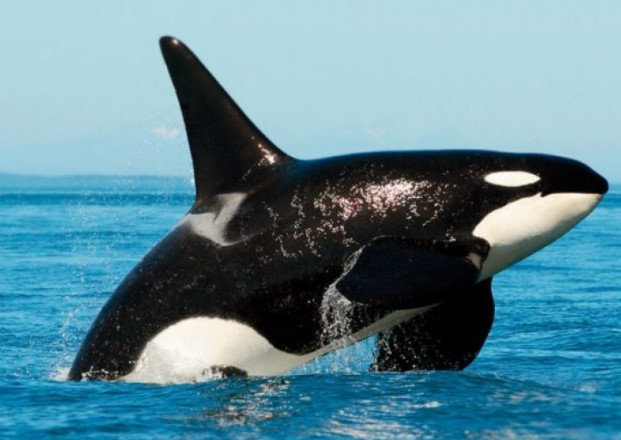

Leopardo
Conhecidos por suas habilidades de escalada, eles frequentemente carregam suas presas para o alto das árvores para mantê-las fora do alcance de outros predadores.
Também são animais muito fortes, tendo a capacidade de carregar animais com até 6 kg a mais que o seu.

As orcas possuem 50 dentes, que podem triturar os ossos de outros animais em apenas uma mordida.
Orca
As orcas possuem 50 dentes, que podem triturar os ossos de outros animais em apenas uma mordida.
A baleia orca mais velha do mundo, com mais de 100 anos, morreu em 2017.

Búfalo
Os búfalos possuem uma incrível habilidade de resfriar sua temperatura. Para evitar temperaturas elevadas, eles frequentemente chafurdam na água ou na lama para regular a temperatura do corpo, já que possuem poucas glândulas sudoríparas.

Jacaré
Os jacarés têm uma excelente visão noturna, graças a uma camada de células refletoras em seus olhos chamada tapetum lucidum, lhes dando vantagem durante a caça noturna.
Além disso, são equipados com uma mandíbula muito forte, contendo 80 dentes e com uma mordida que pode passar de 1 tonelada.

Panda
Embora os pandas adultos possam parecer calmos e reservados, os pandas jovens são muito brincalhões. Eles são frequentemente vistos rolando e escalando, tanto em zoológicos quanto na natureza.
Eles podem comer até 38 kg de bambu e se alimentar até 14 horas por dia.